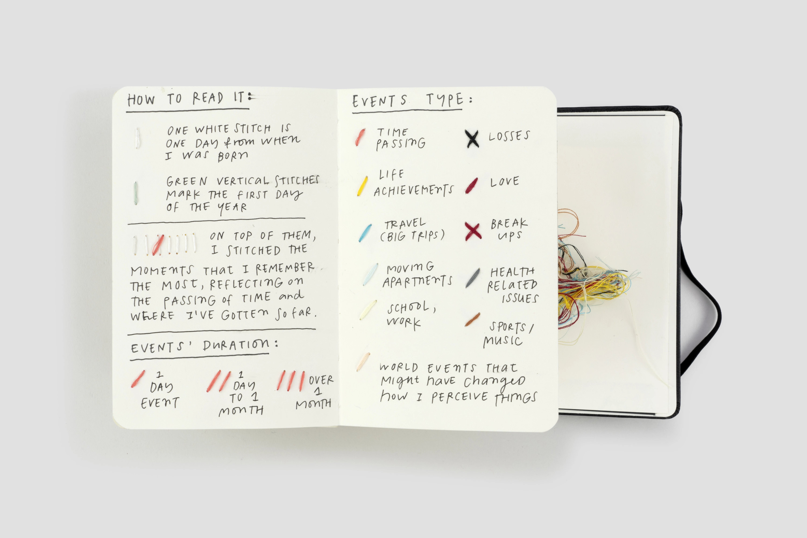
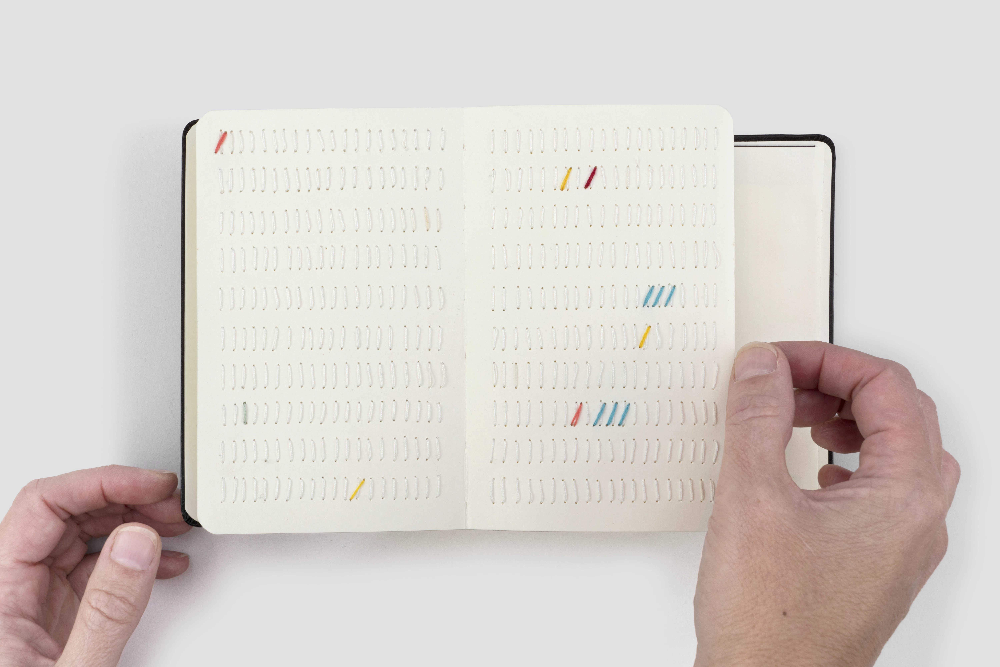
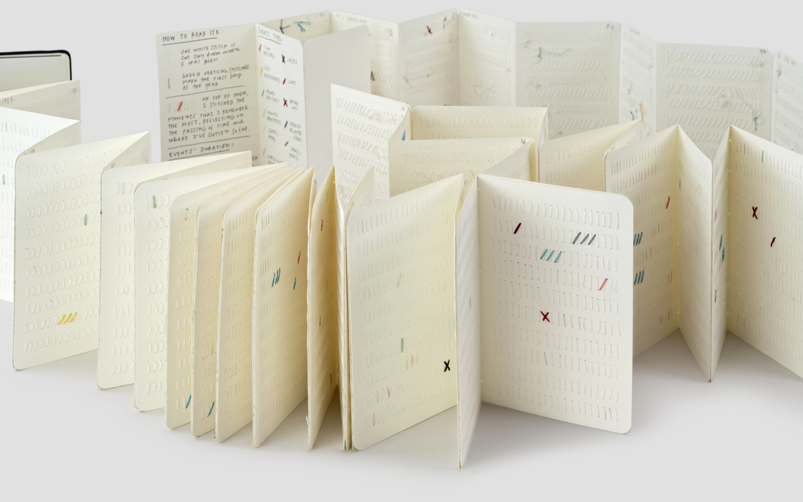

I analysed the work of Giorgia Lupi, partner at Pentagram and pioneer of "Data Humanism." This project for the Moleskine Foundation is a prime example of a visual essay reconnecting cold numbers to human stories behind them specifically for youth and creators to inspire critical thinking and creative confidence.

Figure 1: Giorgia Lupi’s hand-stitched Moleskine (Pentagram, 2022).
The project works by ditching traditional charts for a much more tactile, stitch-by-hand system of "data embroidery". It's through this narrative stitch for each day in Lupi's life-that the viewer is challenged to rethink data not as an abstract statistic, but as something almost living and breathing.

Figure 2: Giorgia Lupi’s hand-stitched Moleskine (Pentagram, 2022).
Despite its immense aesthetic beauty, I felt "Book of Life" has the drawback to rely entirely on a legend for interpretation."Context gap" existing without the key, whereby the specific details of a life event might disappear into the stitches, making the project more of a personal meditation than shared record.

Figure 3: Giorgia Lupi’s hand-stitched Moleskine (Pentagram, 2022).
The strongest element that I can use from Lupi’s work is her invitation to look inwards. I would like my viewers to be challenged to think beyond consumption and really engage with a critical level of analysis related to their own experiences.